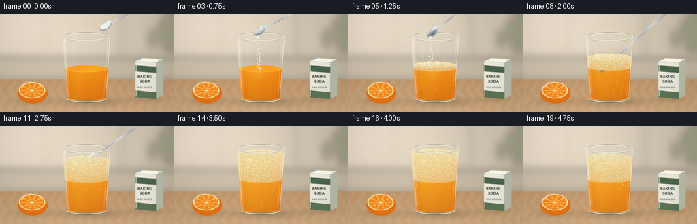
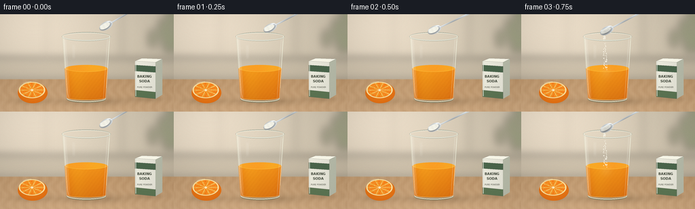

CODING AGENTS AS PIXEL WORLD MODELS
traex/GPT-6.1-Sol · phygen_150
点击播放 · 原生 RGB 像素
逐轮保存的候选
回放视频、检查图与代码变化。
每份候选均可单独播放。实际图片检查记录在下方工具轨迹中。
候选 01播放与检查图
点击播放 · 原生 RGB 像素


展开代码变化
--- 上一保存版本
+++ 本次保存版本
@@ -0,0 +1,331 @@
+"""Procedural, supersampled RGB timelapse of the orange juice / bicarbonate reaction.
+All geometry, materials, bubbles, and motions are constructed locally from the text.
+"""
+from pathlib import Path
+import json, math
+import numpy as np
+from PIL import Image, ImageDraw, ImageFilter, ImageFont
+import artifact_io
+
+ROOT = Path(__file__).resolve().parent
+SPEC = json.loads((ROOT/'task_spec.json').read_text())
+W,H = SPEC['width'], SPEC['height']
+S=4
+SW,SH=W*S,H*S
+Y,X=np.mgrid[0:SH,0:SW].astype(np.float32)
+X/=S; Y/=S
+rng=np.random.default_rng(15023)
+
+def smooth(a,b,v):
+ q=np.clip((v-a)/(b-a),0,1)
+ return q*q*(3-2*q)
+
+def blend(im, color, alpha):
+ alpha=np.clip(alpha,0,1)
+ if np.ndim(alpha)==2: alpha=alpha[...,None]
+ return im*(1-alpha)+np.asarray(color)*alpha
+
+def layer():
+ return Image.new('RGBA',(SW,SH),(0,0,0,0))
+
+def ellipse(d,box,fill,outline=None,width=1):
+ d.ellipse(tuple(int(round(z*S)) for z in box), fill=fill,outline=outline,width=max(1,round(width*S)))
+
+def line(d,pts,fill,width):
+ d.line([(round(x*S),round(y*S)) for x,y in pts],fill=fill,width=max(1,round(width*S)),joint='curve')
+
+def polygon(d,pts,fill):
+ d.polygon([(round(x*S),round(y*S)) for x,y in pts],fill=fill)
+
+def composite(arr,lay):
+ a=np.asarray(lay).astype(np.float32)
+ return blend(arr,a[...,:3],a[...,3]/255.)
+
+def mask_polygon(pts):
+ q=Image.new('L',(SW,SH)); d=ImageDraw.Draw(q)
+ polygon(d,pts,255)
+ return np.asarray(q)/255.
+
+# Static warmly lit kitchen, entirely analytic and deliberately out of focus.
+wall=np.empty((SH,SW,3),np.float32)
+light=np.exp(-((X-47)/132)**2-((Y-10)/100)**2)
+for k,(base,add) in enumerate([(202,39),(191,36),(170,36)]):
+ wall[...,k]=base+add*light-0.06*Y
+back=layer(); d=ImageDraw.Draw(back)
+polygon(d,[(0,64),(256,66),(256,98),(0,97)],(186,173,151,110))
+line(d,[(0,65),(256,67)],(255,249,229,115),2)
+line(d,[(179,0),(179,65)],(163,153,132,110),1.4)
+line(d,[(68,0),(68,65)],(174,163,141,65),1.1)
+# A soft distant plant, not a foreground distraction.
+for cx,cy,rx,ry,ang in [(239,22,6,17,-.5),(249,39,10,19,.3),(225,36,6,14,-.6),(251,9,6,16,.4)]:
+ ellipse(d,(cx-rx,cy-ry,cx+rx,cy+ry),(88,109,69,100))
+wall=composite(wall,back.filter(ImageFilter.GaussianBlur(6*S)))
+woodnoise = np.asarray(Image.fromarray(rng.integers(0,256,(48,128),dtype=np.uint8)).resize((SW,SH),Image.Resampling.BICUBIC).filter(ImageFilter.GaussianBlur(2*S))).astype(float)/255.-.5
+grain=(np.sin(X*.43+np.sin(Y*.24)*1.9)+.32*np.sin(X*1.72+Y*.06)+.14*np.sin(X*3.6))
+table=np.empty_like(wall)
+for k,(v,gg) in enumerate([(185,2.8),(147,3.2),(106,3.3)]):
+ table[...,k]=v+(Y-95)*.46 + grain*gg+woodnoise*6+light*14
+wall=blend(wall,table,smooth(95,97,Y))
+# Grounding shadows with soft penumbrae.
+shadow=(.24*np.exp(-((X-137)/47)**2-((Y-129)/6.4)**2)+.14*np.exp(-((X-126)/27)**2-((Y-128)/2.1)**2))
+wall=blend(wall,[79,62,40],shadow)
+wall=blend(wall,[90,69,40],.22*np.exp(-((X-47)/27)**2-((Y-128)/5.1)**2))
+wall=blend(wall,[89,71,47],.19*np.exp(-((X-216)/24)**2-((Y-125)/4.6)**2))
+
+# Small unbranded bicarbonate carton on the counter to identify the additive.
+front=mask_polygon([(199,69),(229,71),(229,125),(199,122)])
+side=mask_polygon([(229,71),(239,66),(239,119),(229,125)])
+shade=np.stack([239-.23*(X-199),238-.23*(X-199),224-.20*(X-199)],-1)
+wall=blend(wall,shade,front)
+wall=blend(wall,[183,187,169],side)
+prop=layer(); d=ImageDraw.Draw(prop)
+polygon(d,[(199,69),(209,65),(239,66),(229,71)],(253,251,236,255))
+polygon(d,[(199,75),(229,77),(229,86),(199,84)],(75,102,76,255))
+polygon(d,[(199,112),(229,115),(229,125),(199,122)],(92,117,83,255))
+line(d,[(200,70),(200,121)],(255,255,243,160),.7)
+font=ImageFont.truetype('/usr/share/fonts/truetype/dejavu/DejaVuSans-Bold.ttf',5*S)
+small=ImageFont.truetype('/usr/share/fonts/truetype/dejavu/DejaVuSans.ttf',3*S)
+d.text((202*S,89*S),'BAKING',font=font,fill=(66,73,58,255))
+d.text((205*S,96*S),'SODA',font=font,fill=(66,73,58,255))
+d.text((202*S,106*S),'PURE POWDER',font=small,fill=(103,105,91,255))
+wall=composite(wall,prop.filter(ImageFilter.GaussianBlur(.16*S)))
+
+# Orange half: rind, pith, individual translucent juice vesicles.
+ox,oy=48,116
+rho=np.sqrt(((X-ox)/21.8)**2+((Y-oy)/15.5)**2)
+orange_mask=smooth(1.025,.99,rho) if False else 1-smooth(.99,1.025,rho)
+orange_tex=rng.normal(0,1.6,(SH,SW))
+ocol=np.stack([229+12*(1-rho)+orange_tex,112+20*(1-rho)+orange_tex,19+7*(1-rho)+orange_tex*.3],-1)
+wall=blend(wall,ocol,orange_mask)
+rface=np.sqrt(((X-47)/19.5)**2+((Y-112)/12.1)**2)
+wall=blend(wall,[253,224,157],(1-smooth(.99,1.015,rface)))
+angle=np.arctan2((Y-112)/12.1,(X-47)/19.5)
+flesh=(1-smooth(.88,.91,rface))
+sectors=np.cos(angle*10+.25)
+ocol=np.stack([250+3*np.sin(angle*10),151+15*sectors-15*rface,31+7*sectors],-1)
+wall=blend(wall,ocol,flesh)
+props=layer(); d=ImageDraw.Draw(props)
+for k in range(10):
+ a=2*np.pi*k/10-.025
+ line(d,[(47,112),(47+17.4*np.cos(a),112+10.7*np.sin(a))],(255,230,172,240),.65)
+# Many irregular glistening pulp cells, confined to cut face.
+for _ in range(420):
+ rr=np.sqrt(rng.uniform(.02,.72)); a=rng.uniform(0,2*np.pi)
+ px=47+rr*19.5*np.cos(a); py=112+rr*12.1*np.sin(a)
+ col=(255,int(rng.uniform(164,209)),int(rng.uniform(53,99)),int(rng.uniform(50,155)))
+ ellipse(d,(px-.37,py-.20,px+.45,py+.18),col)
+ellipse(d,(45.4,110.8,48.7,113.5),(255,239,192,255))
+line(d,[(34,102),(39,100),(46,99.6)],(255,249,210,160),.75)
+wall=composite(wall,props)
+
+CX=127.0
+RIM=33.0
+BASE=125.5
+# The cup gently tapers from 36 to 29 pixels.
+rad=35.4-(Y-RIM)*.070
+cupdist=np.abs(X-CX)/rad
+bottom=BASE+5.1*np.sqrt(np.maximum(0,1-((X-CX)/28.9)**2))
+top=RIM-6.1*np.sqrt(np.maximum(0,1-((X-CX)/35.4)**2))
+cupmask=(1-smooth(.988,1.009,cupdist))*smooth(top-.25,top+.25,Y)*(1-smooth(bottom-.25,bottom+.25,Y))
+# Refract the background through empty glass, with subtle edge magnification.
+sx=CX+(X-CX)*(.968+.060*(np.abs(X-CX)/36)**3)
+xi=np.clip((sx*S).astype(int),0,SW-1)
+refracted=wall[np.arange(SH)[:,None],xi]
+glassbase=blend(wall,refracted,cupmask*.75)
+glassbase=blend(glassbase,[233,237,222],cupmask*.048)
+# Rear rim: thin colored glass line instead of an opaque outline.
+rims=layer(); d=ImageDraw.Draw(rims)
+d.arc(tuple(round(z*S) for z in (CX-35.8,RIM-6.5,CX+35.8,RIM+6.5)),180,360,fill=(128,140,126,180),width=round(.65*S))
+d.arc(tuple(round(z*S) for z in (CX-35.4,RIM-5.8,CX+35.4,RIM+5.8)),183,356,fill=(255,255,239,210),width=round(.65*S))
+glassbase=composite(glassbase,rims)
+
+# Persistent bubble IDs; small grains flow continuously rather than jumping frames.
+liquid_bubbles=[(rng.uniform(-1,1),rng.uniform(0,1),rng.uniform(.22,1.4),rng.uniform(0,1)) for _ in range(140)]
+foam_bubbles=[(rng.uniform(-1,1),rng.uniform(0,1),rng.uniform(.35,2.00),rng.uniform(0,2*np.pi)) for _ in range(470)]
+top_bubbles=[(rng.uniform(-1,1),rng.uniform(-1,1),rng.uniform(.65,2.8),rng.uniform(0,2*np.pi)) for _ in range(160)]
+grains=[(rng.uniform(-1,1),rng.uniform(0,1),rng.uniform(.19,.45)) for _ in range(78)]
+
+def spoon_layer(bx,by,angle,load,submerged=False):
+ # A stainless steel spoon, mathematically shaded in local coordinates.
+ ca,sa=np.cos(angle),np.sin(angle)
+ u=(X-bx)*ca+(Y-by)*sa
+ v=-(X-bx)*sa+(Y-by)*ca
+ # elongated bowl, then tapered stem toward the offscreen hand
+ br=np.sqrt((u/10.8)**2+(v/5.9)**2)
+ bm=1-smooth(.96,1.015,br)
+ hw=1.1+0.65*smooth(14,110,u)
+ hm=(1-smooth(hw-.14,hw+.14,np.abs(v)))*smooth(5.8,8.0,u)*(1-smooth(130,132,u))
+ mask=np.maximum(bm,hm)
+ concavity=np.exp(-((u+1)/7.5)**2-((v-1)/3.1)**2)
+ silver=195-91*concavity+55*np.exp(-((v+3.5)/.9)**2)+21*np.sin(u*.15)
+ silver=np.clip(silver,70,250)
+ color=np.stack([silver*.96,silver*.987,silver],-1)
+ edge=np.exp(-((br-.91)/.06)**2)
+ color+=edge[...,None]*30
+ lineglint=np.exp(-((v+.64)/.29)**2)*hm
+ color+=lineglint[...,None]*46
+ if submerged:
+ sub=smooth(78,85,Y)
+ color=color*(1-sub[...,None]*.35)+np.array([216,130,25])*sub[...,None]*.35
+ mask*=1-sub*.28
+ lay=np.dstack([np.clip(color,0,255),mask*255]).astype(np.uint8)
+ out=Image.fromarray(lay)
+ if load>0:
+ # Matte white uneven bicarbonate mound sitting inside the bowl.
+ pm=(1-smooth(.85,1.02,np.sqrt(((u+1.4)/8.7)**2+((v+.55)/(3.8*load+.5))**2)))*load
+ col=np.stack([247+3*np.cos(u),246+3*np.cos(u),235+3*np.cos(u)],-1)
+ speck=rng.normal(0,.9,(SH,SW))
+ col+=speck[...,None]
+ p=Image.fromarray(np.dstack([np.clip(col,0,255),pm*255]).astype(np.uint8))
+ out=Image.alpha_composite(out,p)
+ return out
+
+frames=[]
+for frame in range(SPEC['frames']):
+ t=frame
+ im=glassbase.copy()
+ progress=smooth(3.5,15,t)
+ activity=smooth(3,7,t)*(1-.62*smooth(15,20,t))
+ # Juice stays below the expanding gas foam; it lightens as white soda dissolves.
+ level=80-1.9*smooth(3,7,t)
+ lr=35.4-(level-RIM)*.07-1.2
+ lbottom=123.7+3.2*np.sqrt(np.maximum(0,1-((X-CX)/28)**2))
+ ltop=level-5.15*np.sqrt(np.maximum(0,1-((X-CX)/lr)**2))
+ liquidmask=cupmask*smooth(ltop-.18,ltop+.18,Y)*(1-smooth(lbottom-.1,lbottom+.15,Y))
+ depth=np.clip((Y-level)/49,0,1)
+ side=np.clip((X-CX)/(rad-1),-1,1)
+ illumination=9*np.exp(-((side+.45)/.50)**2)-16*np.abs(side)**5
+ pulp=1.4*np.sin(X*1.1+Y*.85)+.7*np.sin(X*2.7-Y*1.25)
+ juice=np.stack([244-depth*22+illumination*.35+progress*3+pulp,
+ 145-depth*29+illumination+progress*10+pulp,
+ 20-depth*6+illumination*.24+progress*8+pulp*.4],-1)
+ im=blend(im,juice,liquidmask*.965)
+ # The exposed juice meniscus reflects the window.
+ es=((X-CX)/lr)**2+((Y-level)/5.15)**2
+ meniscus=1-smooth(.97,1.035,es)
+ surface=np.stack([252+X*0,168+7*np.sin((X-CX)*.1-t*.7),39+X*0],-1)
+ im=blend(im,surface,meniscus*.77)
+ surf=layer(); d=ImageDraw.Draw(surf)
+ d.arc(tuple(round(z*S) for z in (CX-lr,level-5.1,CX+lr,level+5.1)),10,170,fill=(255,199,70,180),width=round(.55*S))
+ if 6<=t<=11:
+ # A circular surface current visible briefly while the spoon mixes.
+ for n in range(3):
+ rr=8+n*5
+ d.arc(tuple(round(z*S) for z in (CX-rr,level-rr*.22,CX+rr,level+rr*.22)),int(t*46+n*41),int(t*46+n*41+135),fill=(255,206,80,125-n*20),width=round(.55*S))
+ im=composite(im,surf)
+
+ # Spoon enters, tips powder, briefly stirs, and is withdrawn.
+ if t<=12:
+ if t<=2:
+ bx=156-14*t; by=17+3*t; ang=-.52+.04*t; load=1
+ elif t<=5:
+ bx=126-1.1*(t-3); by=24+1.2*(t-3); ang=-.49-.095*(t-3); load=1-(t-2)/4
+ elif t<=10:
+ phase=(t-6)*1.7
+ bx=127+7*np.cos(phase); by=79+3*np.sin(phase); ang=-.72+.04*np.sin(phase);load=0
+ else:
+ bx=132+30*(t-11); by=48-27*(t-11);ang=-.6;load=0
+ im=composite(im,spoon_layer(bx,by,ang,max(0,load),t>=6 and t<=10))
+ if 3<=t<=5:
+ powder=layer(); d=ImageDraw.Draw(powder)
+ for k,(spread,phase,r) in enumerate(grains):
+ h=((phase+(t-3)*.47)%1)
+ px=bx-4+spread*(1.2+2.5*h)+2.6*h
+ py=by+5+h*(level-by-2)
+ ellipse(d,(px-r,py-r*1.8,px+r,py+r*1.8),(252,249,235,230))
+ im=composite(im,powder)
+ # The first white plume dissolves in the orange juice.
+ cloud=np.exp(-((X-(CX-2))/8)**2-((Y-86)/9)**2)*.13
+ im=blend(im,[255,220,145],cloud*liquidmask)
+
+ # Buoyant CO2 bubbles, growing and moving upwards through the orange liquid.
+ bubbly=layer(); d=ImageDraw.Draw(bubbly)
+ for i,(xx,phase,r,seed) in enumerate(liquid_bubbles):
+ if i>activity*140: continue
+ q=(phase+t*(.073+.028*seed))%1
+ py=122-q*(122-level)
+ width=35.4-(py-RIM)*.07-3
+ px=CX+xx*width+1.1*np.sin(q*11+t*.7+seed*7)
+ rr=r*(.45+.65*q)
+ ellipse(d,(px-rr,py-rr,px+rr,py+rr),(237,167,56,80),(179,110,22,110),.20)
+ ellipse(d,(px-rr*.5,py-rr*.62,px,py-rr*.13),(255,238,157,195))
+ im=composite(im,bubbly)
+
+ # The bicarbonate / acid reaction builds a thick microbubble foam, then relaxes.
+ if t>=4:
+ fdepth=2.3+36.8*progress-7.0*smooth(16,19,t)
+ ftop=level-fdepth
+ fr=35.4-(ftop-RIM)*.07-1.35
+ dx=(X-CX)/fr
+ front=np.sqrt(np.maximum(0,1-dx*dx))
+ wav=.52*np.sin(X*.44+t*.8)+.24*np.sin(X*1.2-t*.5)
+ topedge=ftop-5.5*front+wav
+ lowedge=level+4.3*np.sqrt(np.maximum(0,1-((X-CX)/lr)**2))
+ fm=(1-smooth(.985,1.00,np.abs(dx)))*smooth(topedge-.22,topedge+.22,Y)*(1-smooth(lowedge-.3,lowedge+.3,Y))*cupmask
+ fv=np.clip((Y-ftop)/max(4,fdepth),0,1)
+ shade=10*np.exp(-((dx+.50)/.5)**2)-19*np.abs(dx)**4
+ micro=1.7*np.sin(X*2.6+Y*2.3)+1.6*np.sin(X*4.9-Y*2.8)
+ fcol=np.stack([249-12*fv+shade*.30+micro*.30,
+ 233-40*fv+shade*.70+micro,
+ 178-57*fv+shade*.65+micro],-1)
+ im=blend(im,fcol,fm)
+ foam=layer(); d=ImageDraw.Draw(foam)
+ # Interlocking wet cream cells on the front side of the foam.
+ for i,(xx,q,r,phase) in enumerate(foam_bubbles):
+ yy=(q+t*.013*(.5+r))%1
+ py=ftop+yy*(fdepth+2.5)
+ localr=35.4-(py-RIM)*.07-2.1
+ px=CX+xx*localr+.35*np.sin(phase+t)
+ rr=r*(.6+.38*progress)
+ # A little amber under each film, and a white crescent specular above.
+ ellipse(d,(px-rr,py-rr,px+rr,py+rr),(235,203,137,100),(178,144,79,100),.20)
+ d.arc(tuple(round(z*S) for z in (px-rr*.85,py-rr*.85,px+rr*.85,py+rr*.85)),195,292,fill=(255,253,222,215),width=max(1,round(.27*S)))
+ if rr>1.2:
+ ellipse(d,(px-rr*.37,py-rr*.47,px-rr*.11,py-rr*.2),(255,255,232,225))
+ # Larger bubbles across the upper foam surface, foreshortened by the camera.
+ for xx,yy,r,phase in top_bubbles:
+ if xx*xx+yy*yy>.87:continue
+ px=CX+xx*(fr-1.8)
+ py=ftop+yy*4.5+.26*np.sin(t*.85+phase)
+ rr=r*(.60+.40*progress)*(1+.1*np.sin(t*.9+phase))
+ ellipse(d,(px-rr,py-rr*.64,px+rr,py+rr*.64),(242,226,184,190),(197,174,112,160),.22)
+ d.arc(tuple(round(z*S) for z in (px-rr*.83,py-rr*.54,px+rr*.83,py+rr*.54)),190,310,fill=(255,255,230,240),width=max(1,round(.35*S)))
+ fa=np.asarray(foam).astype(float)
+ im=blend(im,fa[...,:3],fa[...,3]/255*fm)
+
+ # Optical finish: narrow glass edges, broad transparent window reflections,
+ # bright lip and heavy rounded base, all in front of the contents.
+ edge=np.exp(-((cupdist-.977)/.018)**2)*cupmask
+ im=blend(im,[250,252,231],edge*.49)
+ darkedge=np.exp(-((cupdist-.999)/.007)**2)*cupmask
+ im=blend(im,[102,117,103],darkedge*.22)
+ leftband=np.exp(-((X-(CX-rad+4.0))/1.40)**2)
+ thinband=np.exp(-((X-(CX-rad+2.1))/.36)**2)
+ rightband=np.exp(-((X-(CX+rad-3.7))/.75)**2)
+ # Window reflection fades toward the middle, preserving the clear-cup reading.
+ refl=(leftband*.17+thinband*.42+rightband*.19)*cupmask*smooth(32,39,Y)*(1-.35*smooth(111,127,Y))
+ im=blend(im,[255,255,246],refl)
+ window=np.exp(-((X-108.4)/2.2)**4)*smooth(43,48,Y)*(1-smooth(62,68,Y))*cupmask*.09
+ im=blend(im,[255,255,247],window)
+ finish=layer(); d=ImageDraw.Draw(finish)
+ # Curved glass lip: the rear arc was drawn before the liquid.
+ box=(CX-35.8,RIM-6.5,CX+35.8,RIM+6.5)
+ d.arc(tuple(round(z*S) for z in box),0,180,fill=(112,130,111,160),width=round(.65*S))
+ d.arc(tuple(round(z*S) for z in (CX-35.5,RIM-6,CX+35.5,RIM+6)),2,178,fill=(255,255,246,230),width=round(.80*S))
+ d.arc(tuple(round(z*S) for z in (CX-33.9,RIM-5.0,CX+33.9,RIM+5.0)),4,172,fill=(194,206,185,130),width=round(.38*S))
+ line(d,[(94.2,35),(95.3,55),(99,115),(101,123)],(255,255,237,150),.55)
+ line(d,[(160.7,39),(159.5,57),(156.4,109)],(255,255,237,145),.45)
+ d.arc(tuple(round(z*S) for z in (98,120.1,156,130.8)),0,180,fill=(107,122,102,165),width=round(1*S))
+ d.arc(tuple(round(z*S) for z in (99.2,120.2,155.4,129.4)),0,179,fill=(245,249,223,225),width=round(1.05*S))
+ d.arc(tuple(round(z*S) for z in (100.6,119.9,154.7,126.8)),0,180,fill=(255,241,189,150),width=round(.6*S))
+ im=composite(im,finish)
+ # Slight optical softening and low-level sensor grain, with no camera shake.
+ image=Image.fromarray(np.clip(im,0,255).astype(np.uint8)).resize((W,H),Image.Resampling.LANCZOS)
+ arr=np.asarray(image).astype(float)
+ noise=np.random.default_rng(700+frame).normal(0,.42,(H,W,1))
+ vignette=1-.047*((np.arange(W)[None,:]-W/2)/(W/2))**2-.030*((np.arange(H)[:,None]-H/2)/(H/2))**2
+ arr=arr*vignette[...,None]+noise
+ frames.append(np.clip(arr,0,255).astype(np.uint8))
+
+artifact_io.save(np.stack(frames),ROOT)
+print(f'Saved {len(frames)} RGB frames at {W}x{H}, {SPEC["fps"]} fps.')
可观测工具轨迹
实际执行的命令与返回图片。
命令 1exit 0
/bin/bash -lc 'ls -la && cat prompt.txt && cat GENERATION_RULES.md && cat task_spec.json'
命令 2exit 0
/bin/bash -lc "cat artifact_io.py && cat player_template.html && python - <<'PY'
import numpy,PIL
print('numpy',numpy.__version__,'Pillow',PIL.__version__)
PY"命令 3exit 0
/bin/bash -lc 'fc-list | head -8'
命令 4exit 0
/bin/bash -lc "cat > generate.py <<'PY'
\"\"\"Procedural, supersampled RGB timelapse of the orange juice / bicarbonate reaction.
All geometry, materials, bubbles, and motions are constructed locally from the text.
\"\"\"
from pathlib import Path
import json, math
import numpy as np
from PIL import Image, ImageDraw, ImageFilter, ImageFont
import artifact_io
ROOT = Path(__file__).resolve().parent
SPEC = json.loads((ROOT/'task_spec.json').read_text())
W,H = SPEC['width'], SPEC['height']
S=4
SW,SH=W*S,H*S
Y,X=np.mgrid[0:SH,0:SW].astype(np.float32)
X/=S; Y/=S
rng=np.random.default_rng(15023)
def smooth(a,b,v):
q=np.clip((v-a)/(b-a),0,1)
return q*q*(3-2*q)
def blend(im, color, alpha):
alpha=np.clip(alpha,0,1)
if np.ndim(alpha)==2: alpha=alpha[...,None]
return im*(1-alpha)+np.asarray(color)*alpha
def layer():
return Image.new('RGBA',(SW,SH),(0,0,0,0))
def ellipse(d,box,fill,outline=None,width=1):
d.ellipse(tuple(int(round(z*S)) for z in box), fill=fill,outline=outline,width=max(1,round(width*S)))
def line(d,pts,fill,width):
d.line([(round(x*S),round(y*S)) for x,y in pts],fill=fill,width=max(1,round(width*S)),joint='curve')
def polygon(d,pts,fill):
d.polygon([(round(x*S),round(y*S)) for x,y in pts],fill=fill)
def composite(arr,lay):
a=np.asarray(lay).astype(np.float32)
return blend(arr,a[...,:3],a[...,3]/255.)
def mask_polygon(pts):
q=Image.new('L',(SW,SH)); d=ImageDraw.Draw(q)
polygon(d,pts,255)
return np.asarray(q)/255.
# Static warmly lit kitchen, entirely analytic and deliberately out of focus.
wall=np.empty((SH,SW,3),np.float32)
light=np.exp(-((X-47)/132)**2-((Y-10)/100)**2)
for k,(base,add) in enumerate([(202,39),(191,36),(170,36)]):
wall[...,k]=base+add*light-0.06*Y
back=layer(); d=ImageDraw.Draw(back)
polygon(d,[(0,64),(256,66),(256,98),(0,97)],(186,173,151,110))
line(d,[(0,65),(256,67)],(255,249,229,115),2)
line(d,[(179,0),(179,65)],(163,153,132,110),1.4)
line(d,[(68,0),(68,65)],(174,163,141,65),1.1)
# A soft distant plant, not a foreground distraction.
for cx,cy,rx,ry,ang in [(239,22,6,17,-.5),(249,39,10,19,.3),(225,36,6,14,-.6),(251,9,6,16,.4)]:
ellipse(d,(cx-rx,cy-ry,cx+rx,cy+ry),(88,109,69,100))
wall=composite(wall,back.filter(ImageFilter.GaussianBlur(6*S)))
woodnoise = np.asarray(Image.fromarray(rng.integers(0,256,(48,128),dtype=np.uint8)).resize((SW,SH),Image.Resampling.BICUBIC).filter(ImageFilter.GaussianBlur(2*S))).astype(float)/255.-.5
grain=(np.sin(X*.43+np.sin(Y*.24)*1.9)+.32*np.sin(X*1.72+Y*.06)+.14*np.sin(X*3.6))
table=np.empty_like(wall)
for k,(v,gg) in enumerate([(185,2.8),(147,3.2),(106,3.3)]):
table[...,k]=v+(Y-95)*.46 + grain*gg+woodnoise*6+light*14
wall=blend(wall,table,smooth(95,97,Y))
# Grounding shadows with soft penumbrae.
shadow=(.24*np.exp(-((X-137)/47)**2-((Y-129)/6.4)**2)+.14*np.exp(-((X-126)/27)**2-((Y-128)/2.1)**2))
wall=blend(wall,[79,62,40],shadow)
wall=blend(wall,[90,69,40],.22*np.exp(-((X-47)/27)**2-((Y-128)/5.1)**2))
wall=blend(wall,[89,71,47],.19*np.exp(-((X-216)/24)**2-((Y-125)/4.6)**2))
# Small unbranded bicarbonate carton on the counter to identify the additive.
front=mask_polygon([(199,69),(229,71),(229,125),(199,122)])
side=mask_polygon([(229,71),(239,66),(239,119),(229,125)])
shade=np.stack([239-.23*(X-199),238-.23*(X-199),224-.20*(X-199)],-1)
wall=blend(wall,shade,front)
wall=blend(wall,[183,187,169],side)
prop=layer(); d=ImageDraw.Draw(prop)
polygon(d,[(199,69),(209,65),(239,66),(229,71)],(253,251,236,255))
polygon(d,[(199,75),(229,77),(229,86),(199,84)],(75,102,76,255))
polygon(d,[(199,112),(229,115),(229,125),(199,122)],(92,117,83,255))
line(d,[(200,70),(200,121)],(255,255,243,160),.7)
font=ImageFont.truetype('/usr/share/fonts/truetype/dejavu/DejaVuSans-Bold.ttf',5*S)
small=ImageFont.truetype('/usr/share/fonts/truetype/dejavu/DejaVuSans.ttf',3*S)
d.text((202*S,89*S),'BAKING',font=font,fill=(66,73,58,255))
d.text((205*S,96*S),'SODA',font=font,fill=(66,73,58,255))
d.text((202*S,106*S),'PURE POWDER',font=small,fill=(103,105,91,255))
wall=composite(wall,prop.filter(ImageFilter.GaussianBlur(.16*S)))
# Orange half: rind, pith, individual translucent juice vesicles.
ox,oy=48,116
rho=np.sqrt(((X-ox)/21.8)**2+((Y-oy)/15.5)**2)
orange_mask=smooth(1.025,.99,rho) if False else 1-smooth(.99,1.025,rho)
orange_tex=rng.normal(0,1.6,(SH,SW))
ocol=np.stack([229+12*(1-rho)+orange_tex,112+20*(1-rho)+orange_tex,19+7*(1-rho)+orange_tex*.3],-1)
wall=blend(wall,ocol,orange_mask)
rface=np.sqrt(((X-47)/19.5)**2+((Y-112)/12.1)**2)
wall=blend(wall,[253,224,157],(1-smooth(.99,1.015,rface)))
angle=np.arctan2((Y-112)/12.1,(X-47)/19.5)
flesh=(1-smooth(.88,.91,rface))
sectors=np.cos(angle*10+.25)
ocol=np.stack([250+3*np.sin(angle*10),151+15*sectors-15*rface,31+7*sectors],-1)
wall=blend(wall,ocol,flesh)
props=layer(); d=ImageDraw.Draw(props)
for k in range(10):
a=2*np.pi*k/10-.025
line(d,[(47,112),(47+17.4*np.cos(a),112+10.7*np.sin(a))],(255,230,172,240),.65)
# Many irregular glistening pulp cells, confined to cut face.
for _ in range(420):
rr=np.sqrt(rng.uniform(.02,.72)); a=rng.uniform(0,2*np.pi)
px=47+rr*19.5*np.cos(a); py=112+rr*12.1*np.sin(a)
col=(255,int(rng.uniform(164,209)),int(rng.uniform(53,99)),int(rng.uniform(50,155)))
ellipse(d,(px-.37,py-.20,px+.45,py+.18),col)
ellipse(d,(45.4,110.8,48.7,113.5),(255,239,192,255))
line(d,[(34,102),(39,100),(46,99.6)],(255,249,210,160),.75)
wall=composite(wall,props)
CX=127.0
RIM=33.0
BASE=125.5
# The cup gently tapers from 36 to 29 pixels.
rad=35.4-(Y-RIM)*.070
cupdist=np.abs(X-CX)/rad
bottom=BASE+5.1*np.sqrt(np.maximum(0,1-((X-CX)/28.9)**2))
top=RIM-6.1*np.sqrt(np.maximum(0,1-((X-CX)/35.4)**2))
cupmask=(1-smooth(.988,1.009,cupdist))*smooth(top-.25,top+.25,Y)*(1-smooth(bottom-.25,bottom+.25,Y))
# Refract the background through empty glass, with subtle edge magnification.
sx=CX+(X-CX)*(.968+.060*(np.abs(X-CX)/36)**3)
xi=np.clip((sx*S).astype(int),0,SW-1)
refracted=wall[np.arange(SH)[:,None],xi]
glassbase=blend(wall,refracted,cupmask*.75)
glassbase=blend(glassbase,[233,237,222],cupmask*.048)
# Rear rim: thin colored glass line instead of an opaque outline.
rims=layer(); d=ImageDraw.Draw(rims)
d.arc(tuple(round(z*S) for z in (CX-35.8,RIM-6.5,CX+35.8,RIM+6.5)),180,360,fill=(128,140,126,180),width=round(.65*S))
d.arc(tuple(round(z*S) for z in (CX-35.4,RIM-5.8,CX+35.4,RIM+5.8)),183,356,fill=(255,255,239,210),width=round(.65*S))
glassbase=composite(glassbase,rims)
# Persistent bubble IDs; small grains flow continuously rather than jumping frames.
liquid_bubbles=[(rng.uniform(-1,1),rng.uniform(0,1),rng.uniform(.22,1.4),rng.uniform(0,1)) for _ in range(140)]
foam_bubbles=[(rng.uniform(-1,1),rng.uniform(0,1),rng.uniform(.35,2.00),rng.uniform(0,2*np.pi)) for _ in range(470)]
top_bubbles=[(rng.uniform(-1,1),rng.uniform(-1,1),rng.uniform(.65,2.8),rng.uniform(0,2*np.pi)) for _ in range(160)]
grains=[(rng.uniform(-1,1),rng.uniform(0,1),rng.uniform(.19,.45)) for _ in range(78)]
def spoon_layer(bx,by,angle,load,submerged=False):
# A stainless steel spoon, mathematically shaded in local coordinates.
ca,sa=np.cos(angle),np.sin(angle)
u=(X-bx)*ca+(Y-by)*sa
v=-(X-bx)*sa+(Y-by)*ca
# elongated bowl, then tapered stem toward the offscreen hand
br=np.sqrt((u/10.8)**2+(v/5.9)**2)
bm=1-smooth(.96,1.015,br)
hw=1.1+0.65*smooth(14,110,u)
hm=(1-smooth(hw-.14,hw+.14,np.abs(v)))*smooth(5.8,8.0,u)*(1-smooth(130,132,u))
mask=np.maximum(bm,hm)
concavity=np.exp(-((u+1)/7.5)**2-((v-1)/3.1)**2)
silver=195-91*concavity+55*np.exp(-((v+3.5)/.9)**2)+21*np.sin(u*.15)
silver=np.clip(silver,70,250)
color=np.stack([silver*.96,silver*.987,silver],-1)
edge=np.exp(-((br-.91)/.06)**2)
color+=edge[...,None]*30
lineglint=np.exp(-((v+.64)/.29)**2)*hm
color+=lineglint[...,None]*46
if submerged:
sub=smooth(78,85,Y)
color=color*(1-sub[...,None]*.35)+np.array([216,130,25])*sub[...,None]*.35
mask*=1-sub*.28
lay=np.dstack([np.clip(color,0,255),mask*255]).astype(np.uint8)
out=Image.fromarray(lay)
if load>0:
# Matte white uneven bicarbonate mound sitting inside the bowl.
pm=(1-smooth(.85,1.02,np.sqrt(((u+1.4)/8.7)**2+((v+.55)/(3.8*load+.5))**2)))*load
col=np.stack([247+3*np.cos(u),246+3*np.cos(u),235+3*np.cos(u)],-1)
speck=rng.normal(0,.9,(SH,SW))
col+=speck[...,None]
p=Image.fromarray(np.dstack([np.clip(col,0,255),pm*255]).astype(np.uint8))
out=Image.alpha_composite(out,p)
return out
frames=[]
for frame in range(SPEC['frames']):
t=frame
im=glassbase.copy()
progress=smooth(3.5,15,t)
activity=smooth(3,7,t)*(1-.62*smooth(15,20,t))
# Juice stays below the expanding gas foam; it lightens as white soda dissolves.
level=80-1.9*smooth(3,7,t)
lr=35.4-(level-RIM)*.07-1.2
lbottom=123.7+3.2*np.sqrt(np.maximum(0,1-((X-CX)/28)**2))
ltop=level-5.15*np.sqrt(np.maximum(0,1-((X-CX)/lr)**2))
liquidmask=cupmask*smooth(ltop-.18,ltop+.18,Y)*(1-smooth(lbottom-.1,lbottom+.15,Y))
depth=np.clip((Y-level)/49,0,1)
side=np.clip((X-CX)/(rad-1),-1,1)
illumination=9*np.exp(-((side+.45)/.50)**2)-16*np.abs(side)**5
pulp=1.4*np.sin(X*1.1+Y*.85)+.7*np.sin(X*2.7-Y*1.25)
juice=np.stack([244-depth*22+illumination*.35+progress*3+pulp,
145-depth*29+illumination+progress*10+pulp,
20-depth*6+illumination*.24+progress*8+pulp*.4],-1)
im=blend(im,juice,liquidmask*.965)
# The exposed juice meniscus reflects the window.
es=((X-CX)/lr)**2+((Y-level)/5.15)**2
meniscus=1-smooth(.97,1.035,es)
surface=np.stack([252+X*0,168+7*np.sin((X-CX)*.1-t*.7),39+X*0],-1)
im=blend(im,surface,meniscus*.77)
surf=layer(); d=ImageDraw.Draw(surf)
d.arc(tuple(round(z*S) for z in (CX-lr,level-5.1,CX+lr,level+5.1)),10,170,fill=(255,199,70,180),width=round(.55*S))
if 6<=t<=11:
# A circular surface current visible briefly while the spoon mixes.
for n in range(3):
rr=8+n*5
d.arc(tuple(round(z*S) for z in (CX-rr,level-rr*.22,CX+rr,level+rr*.22)),int(t*46+n*41),int(t*46+n*41+135),fill=(255,206,80,125-n*20),width=round(.55*S))
im=composite(im,surf)
# Spoon enters, tips powder, briefly stirs, and is withdrawn.
if t<=12:
if t<=2:
bx=156-14*t; by=17+3*t; ang=-.52+.04*t; load=1
elif t<=5:
bx=126-1.1*(t-3); by=24+1.2*(t-3); ang=-.49-.095*(t-3); load=1-(t-2)/4
elif t<=10:
phase=(t-6)*1.7
bx=127+7*np.cos(phase); by=79+3*np.sin(phase); ang=-.72+.04*np.sin(phase);load=0
else:
bx=132+30*(t-11); by=48-27*(t-11);ang=-.6;load=0
im=composite(im,spoon_layer(bx,by,ang,max(0,load),t>=6 and t<=10))
if 3<=t<=5:
powder=layer(); d=ImageDraw.Draw(powder)
for k,(spread,phase,r) in enumerate(grains):
h=((phase+(t-3)*.47)%1)
px=bx-4+spread*(1.2+2.5*h)+2.6*h
py=by+5+h*(level-by-2)
ellipse(d,(px-r,py-r*1.8,px+r,py+r*1.8),(252,249,235,230))
im=composite(im,powder)
# The first white plume dissolves in the orange juice.
cloud=np.exp(-((X-(CX-2))/8)**2-((Y-86)/9)**2)*.13
im=blend(im,[255,220,145],cloud*liquidmask)
# Buoyant CO2 bubbles, growing and moving upwards through the orange liquid.
bubbly=layer(); d=ImageDraw.Draw(bubbly)
for i,(xx,phase,r,seed) in enumerate(liquid_bubbles):
if i>activity*140: continue
q=(phase+t*(.073+.028*seed))%1
py=122-q*(122-level)
width=35.4-(py-RIM)*.07-3
px=CX+xx*width+1.1*np.sin(q*11+t*.7+seed*7)
rr=r*(.45+.65*q)
ellipse(d,(px-rr,py-rr,px+rr,py+rr),(237,167,56,80),(179,110,22,110),.20)
ellipse(d,(px-rr*.5,py-rr*.62,px,py-rr*.13),(255,238,157,195))
im=composite(im,bubbly)
# The bicarbonate / acid reaction builds a thick microbubble foam, then relaxes.
if t>=4:
fdepth=2.3+36.8*progress-7.0*smooth(16,19,t)
ftop=level-fdepth
fr=35.4-(ftop-RIM)*.07-1.35
dx=(X-CX)/fr
front=np.sqrt(np.maximum(0,1-dx*dx))
wav=.52*np.sin(X*.44+t*.8)+.24*np.sin(X*1.2-t*.5)
topedge=ftop-5.5*front+wav
lowedge=level+4.3*np.sqrt(np.maximum(0,1-((X-CX)/lr)**2))
fm=(1-smooth(.985,1.00,np.abs(dx)))*smooth(topedge-.22,topedge+.22,Y)*(1-smooth(lowedge-.3,lowedge+.3,Y))*cupmask
fv=np.clip((Y-ftop)/max(4,fdepth),0,1)
shade=10*np.exp(-((dx+.50)/.5)**2)-19*np.abs(dx)**4
micro=1.7*np.sin(X*2.6+Y*2.3)+1.6*np.sin(X*4.9-Y*2.8)
fcol=np.stack([249-12*fv+shade*.30+micro*.30,
233-40*fv+shade*.70+micro,
178-57*fv+shade*.65+micro],-1)
im=blend(im,fcol,fm)
foam=layer(); d=ImageDraw.Draw(foam)
# Interlocking wet cream cells on the front side of the foam.
for i,(xx,q,r,phase) in enumerate(foam_bubbles):
yy=(q+t*.013*(.5+r))%1
py=ftop+yy*(fdepth+2.5)
localr=35.4-(py-RIM)*.07-2.1
px=CX+xx*localr+.35*np.sin(phase+t)
rr=r*(.6+.38*progress)
# A little amber under each film, and a white crescent specular above.
ellipse(d,(px-rr,py-rr,px+rr,py+rr),(235,203,137,100),(178,144,79,100),.20)
d.arc(tuple(round(z*S) for z in (px-rr*.85,py-rr*.85,px+rr*.85,py+rr*.85)),195,292,fill=(255,253,222,215),width=max(1,round(.27*S)))
if rr>1.2:
ellipse(d,(px-rr*.37,py-rr*.47,px-rr*.11,py-rr*.2),(255,255,232,225))
# Larger bubbles across the upper foam surface, foreshortened by the camera.
for xx,yy,r,phase in top_bubbles:
if xx*xx+yy*yy>.87:continue
px=CX+xx*(fr-1.8)
py=ftop+yy*4.5+.26*np.sin(t*.85+phase)
rr=r*(.60+.40*progress)*(1+.1*np.sin(t*.9+phase))
ellipse(d,(px-rr,py-rr*.64,px+rr,py+rr*.64),(242,226,184,190),(197,174,112,160),.22)
d.arc(tuple(round(z*S) for z in (px-rr*.83,py-rr*.54,px+rr*.83,py+rr*.54)),190,310,fill=(255,255,230,240),width=max(1,round(.35*S)))
fa=np.asarray(foam).astype(float)
im=blend(im,fa[...,:3],fa[...,3]/255*fm)
# Optical finish: narrow glass edges, broad transparent window reflections,
# bright lip and heavy rounded base, all in front of the contents.
edge=np.exp(-((cupdist-.977)/.018)**2)*cupmask
im=blend(im,[250,252,231],edge*.49)
darkedge=np.exp(-((cupdist-.999)/.007)**2)*cupmask
im=blend(im,[102,117,103],darkedge*.22)
leftband=np.exp(-((X-(CX-rad+4.0))/1.40)**2)
thinband=np.exp(-((X-(CX-rad+2.1))/.36)**2)
rightband=np.exp(-((X-(CX+rad-3.7))/.75)**2)
# Window reflection fades toward the middle, preserving the clear-cup reading.
refl=(leftband*.17+thinband*.42+rightband*.19)*cupmask*smooth(32,39,Y)*(1-.35*smooth(111,127,Y))
im=blend(im,[255,255,246],refl)
window=np.exp(-((X-108.4)/2.2)**4)*smooth(43,48,Y)*(1-smooth(62,68,Y))*cupmask*.09
im=blend(im,[255,255,247],window)
finish=layer(); d=ImageDraw.Draw(finish)
# Curved glass lip: the rear arc was drawn before the liquid.
box=(CX-35.8,RIM-6.5,CX+35.8,RIM+6.5)
d.arc(tuple(round(z*S) for z in box),0,180,fill=(112,130,111,160),width=round(.65*S))
d.arc(tuple(round(z*S) for z in (CX-35.5,RIM-6,CX+35.5,RIM+6)),2,178,fill=(255,255,246,230),width=round(.80*S))
d.arc(tuple(round(z*S) for z in (CX-33.9,RIM-5.0,CX+33.9,RIM+5.0)),4,172,fill=(194,206,185,130),width=round(.38*S))
line(d,[(94.2,35),(95.3,55),(99,115),(101,123)],(255,255,237,150),.55)
line(d,[(160.7,39),(159.5,57),(156.4,109)],(255,255,237,145),.45)
d.arc(tuple(round(z*S) for z in (98,120.1,156,130.8)),0,180,fill=(107,122,102,165),width=round(1*S))
d.arc(tuple(round(z*S) for z in (99.2,120.2,155.4,129.4)),0,179,fill=(245,249,223,225),width=round(1.05*S))
d.arc(tuple(round(z*S) for z in (100.6,119.9,154.7,126.8)),0,180,fill=(255,241,189,150),width=round(.6*S))
im=composite(im,finish)
# Slight optical softening and low-level sensor grain, with no camera shake.
image=Image.fromarray(np.clip(im,0,255).astype(np.uint8)).resize((W,H),Image.Resampling.LANCZOS)
arr=np.asarray(image).astype(float)
noise=np.random.default_rng(700+frame).normal(0,.42,(H,W,1))
vignette=1-.047*((np.arange(W)[None,:]-W/2)/(W/2))**2-.030*((np.arange(H)[:,None]-H/2)/(H/2))**2
arr=arr*vignette[...,None]+noise
frames.append(np.clip(arr,0,255).astype(np.uint8))
artifact_io.save(np.stack(frames),ROOT)
print(f'Saved {len(frames)} RGB frames at {W}x{H}, {SPEC[\"fps\"]} fps.')
PY
python generate.py"命令 5exit 0
/bin/bash -lc "python - <<'PY'
from pathlib import Path
import numpy as np
from PIL import Image
p=np.load('pixels.npz')['pixels']
fs=np.stack([np.asarray(Image.open(f'frames/{i:02d}.png')) for i in range(20)])
print('Packed tensor:',p.shape,p.dtype)
print('RGB frames:',fs.shape,fs.dtype)
print('Mean adjacent-frame changes:',np.abs(np.diff(fs.astype(float),axis=0)).mean(axis=(1,2,3)).round(2).tolist())
for name in ['generate.py','pixels.npz','index.html','inspection.png','transition_check.png']:
print(name, Path(name).stat().st_size, 'bytes')
PY
command -v ffmpeg || true"保存候选 1 份；完成命令 5 次；可验证图片返回 0 张。原始 API 响应与完整日志保留在本地。